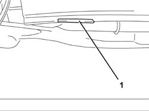

4450A10 FRONT WHEEL GEOMETRY - CHECK USING OPTICAL EQUIPMENT - INCLUDES ADJUSTMENT IF NECESSARY
- Path
- Procedures > 44 SUSPENSION AND WHEELS > 4450 HUBS AND WHEELS > 4450A WHEEL GEOMETRY > 4450A10 FRONT WHEEL GEOMETRY - CHECK USING OPTICAL EQUIPMENT - INCLUDES ADJUSTMENT IF NECESSARY
- Kind
- repair procedure (removal / refitting; the operation number is the code)
- Applies to
- all engines; all production periods
- Interactive page
- https://sloeber94.github.io/elrnDB-fUlss/en/#/179007398
Applies to: all engines; all production periods
Position the vehicle on a lift.
Check that the tyre inflation pressure is within specified values.
1. Using the special tool, compress the front suspension so that height H1 (reference) measured between the bent edge and the ground is:
Applies to: engines: 2.0 16v; all production periods
Applies for versions to 02/2004
Subject | Value | |
|---|---|---|
H1 | FRONT WHEEL GEOMETRY (With 205/65 R15 tyres) | mm 167+12/-10 |
Valid for versions from 02/2004
Subject | Value | |
|---|---|---|
H1 | FRONT WHEEL GEOMETRY (With 215/65 R15 tyres) | mm 171+12/-10 |
Subject | Value | |
|---|---|---|
H1 | FRONT WHEEL GEOMETRY (With 215/60 R16 tyres) | mm 175+12/-10 |
Applies to: engines: 2.0 16V JTD, 2.2 16V JTD; all production periods
Applies for versions to 02/2004
Subject | Value | |
|---|---|---|
H1 | FRONT WHEEL GEOMETRY (With 205/65 R15 tyres) | mm 171+12/-10 |
Valid for versions from 02/2004
Subject | Value | |
|---|---|---|
H1 | FRONT WHEEL GEOMETRY (With 215/65 R15 tyres) | mm 171+12/-10 |
Subject | Value | |
|---|---|---|
H1 | FRONT WHEEL GEOMETRY (With 215/60 R16 tyres) | mm 175+12/-10 |
Applies to: engines: 3.0 24V V6; all production periods
Description | Code | Function | |
|---|---|---|---|
. | Tool kit | Suspension pre-loading |
Applies for versions to 02/2004
Subject | Value | |
|---|---|---|
H1 | FRONT WHEEL GEOMETRY (With 205/65 R15 tyres) | mm 175+12/-10 |
Valid for versions from 02/2004
Subject | Value | |
|---|---|---|
H1 | FRONT WHEEL GEOMETRY (With 215/65 R15 tyres) | mm 171+12/-10 |
Subject | Value | |
|---|---|---|
H1 | FRONT WHEEL GEOMETRY (With 215/60 R16 tyres) | mm 175+12/-10 |

Applies to: all engines; all production periods
In these conditions, check the front suspension angles listed below.
TOE IN CHECK
Check that the front wheel toe in is within required limits.
Subject | Value | |
|---|---|---|
. | FRONT WHEEL TOW-IN | |
- | - | + 1 ± 0.5 |
CAMBER CHECK
Check that the front wheel camber is correct.
Subject | Value | |
|---|---|---|
. | FRONT WHEEL CAMBER | |
- | - | + 0° ± 30” |
CASTER CHECK
Check that the front wheel caster is within specified values.
Subject | Value | |
|---|---|---|
. | FRONT WHEEL CASTER | |
- | - | 3° 30” ± 30” |
Remove the tool positioned previously.
Description | Code | Function | |
|---|---|---|---|
. | Tool kit | Suspension pre-loading |
Remove the vehicle from the lift.
Topics that link to this page (5)
- 4410B40 LOWER TRACK CONTROL ARM (WITH BALLJOINT) FOR LEFT OR RIGHT FRONT SUSPENSION (ONE) - R+R - CHECK WHEEL GEOMETRY SEPARATELY
- 4410C11 ROD ANCHORING END OF FRONT SUSPENSION ANTI-ROLL BAR L/H OR R/H (ONE) - R+R
- 4410D10 FRONT SUSPENSION FRAME - R+R
- 4410A12 FRONT SUSPENSION DAMPER (ONE), LH OR RH - FOR MCPHERSON STRUT SYSTEM - INCLUDES DISMANTLING/RE-BUILDING OF ASSEMBLY AT BENCH R R
- 4450C10 FRONT STEERING KNUCKLE (ONE), L/H OR R/H COMPLETE WITH WHEEL HUB - R+R WITH WHEEL REMOVED - CHECK WHEEL GEOMETRY SEPARATELY